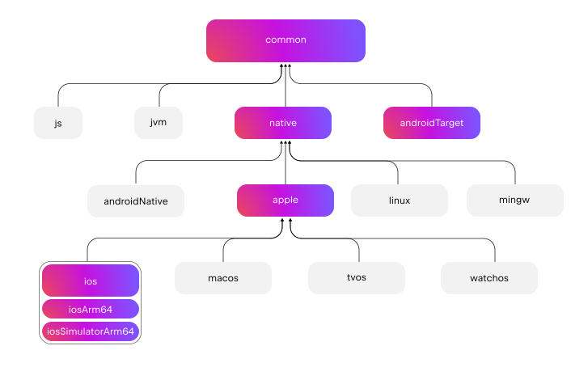

Kotlin 1.8.20 的新特性
The Kotlin 1.8.20 release is out and here are some of its biggest highlights:
- 新版 Kotlin K2 编译器更新
- 新增实验性 Kotlin/Wasm 目标平台
- Gradle 中默认新版 JVM 增量编译
- Kotlin/Native 目标更新
- Kotlin 多平台 Gradle 复合构建预览版
- 改进了 Xcode 中 Gradle 错误的输出
- 标准库中对 AutoCloseable 接口的实验性支持
- 标准库中对 Base64 编码的实验性支持
You can also find a short overview of the changes in this video:
YouTube 视频：What's new in Kotlin 1.8.20
IDE 支持
The Kotlin plugins that support 1.8.20 are available for:
| IDE | Supported versions |
|---|---|
| IntelliJ IDEA | 2022.2.x, 2022.3.x, 2023.1.x |
| Android Studio | Flamingo (222) |
To download Kotlin artifacts and dependencies properly, configure Gradle settings to use the Maven Central repository.
新版 Kotlin K2 编译器更新
The Kotlin team continues to stabilize the K2 compiler. As mentioned in the Kotlin 1.7.0 announcement, it's still in Alpha. This release introduces further improvements on the road to K2 Beta.
Starting with this 1.8.20 release, the Kotlin K2 compiler:
- Has a preview version of the serialization plugin.
- Provides Alpha support for the JS IR compiler.
- Introduces the future release of the new language version, Kotlin 2.0.
Learn more about the new compiler and its benefits in the following videos:
如何启用 Kotlin K2 编译器
To enable and test the Kotlin K2 compiler, use the new language version with the following compiler option:
-language-version 2.0
You can specify it in your build.gradle(.kts) file:
kotlin {
sourceSets.all {
languageSettings {
languageVersion = "2.0"
}
}
}
The previous -Xuse-k2 compiler option has been deprecated.
The Alpha version of the new K2 compiler only works with JVM and JS IR projects. It doesn't support Kotlin/Native or any of the multiplatform projects yet.
反馈你对新版 K2 编译器的意见
We would appreciate any feedback you may have!
- Provide your feedback directly to K2 developers on Kotlin Slack – get an invite and join the #k2-early-adopters channel.
- Report any problems you faced with the new K2 compiler on our issue tracker.
- Enable the Send usage statistics option to allow JetBrains to collect anonymous data about K2 usage.
语言
As Kotlin continues to evolve, we're introducing preview versions for new language features in 1.8.20:
枚举类类 values 函数的现代且高性能替代
This feature is Experimental. It may be dropped or changed at any time. Opt-in is required (see details below). Use it only for evaluation purposes. We would appreciate your feedback on it in YouTrack.
Enum classes have a synthetic values() function, which returns an array of defined enum constants. However, using an
array can lead to hidden performance issues
in Kotlin and Java. In addition, most of the APIs use collections, which require eventual conversion. To fix these
problems, we've introduced the entries property for Enum classes, which should be used instead of the values()
function. When called, the entries property returns a pre-allocated immutable list of defined enum constants.
The
values()function is still supported, but we recommend that you use theentriesproperty instead.
enum class Color(val colorName: String, val rgb: String) {
RED("Red", "#FF0000"),
ORANGE("Orange", "#FF7F00"),
YELLOW("Yellow", "#FFFF00")
}
@OptIn(ExperimentalStdlibApi::class)
fun findByRgb(rgb: String): Color? = Color.entries.find { it.rgb == rgb }
如何启用 entries 属性
To try this feature out, opt in with @OptIn(ExperimentalStdlibApi) and enable the -language-version 1.9 compiler
option. In a Gradle project, you can do so by adding the following to your build.gradle(.kts) file:
【Kotlin】
tasks
.withType<org.jetbrains.kotlin.gradle.tasks.KotlinCompilationTask<*>>()
.configureEach {
compilerOptions
.languageVersion
.set(
org.jetbrains.kotlin.gradle.dsl.KotlinVersion.KOTLIN_1_9
)
}
【Groovy】
tasks
.withType(org.jetbrains.kotlin.gradle.tasks.KotlinCompilationTask.class)
.configureEach {
compilerOptions.languageVersion =
org.jetbrains.kotlin.gradle.dsl.KotlinVersion.KOTLIN_1_9
}
Starting with IntelliJ IDEA 2023.1, if you have opted in to this feature, the appropriate IDE inspection will notify you about converting from
values()toentriesand offer a quick-fix.
For more information on the proposal, see the KEEP note.
与数据类相称的数据对象预览版
Data objects allow you to declare objects with singleton semantics and a clean toString() representation. In this
snippet, you can see how adding the data keyword to an object declaration improves the readability of its toString()
output:
package org.example
object MyObject
data object MyDataObject
fun main() {
println(MyObject) // org.example.MyObject@1f32e575
println(MyDataObject) // MyDataObject
}
Especially for sealed hierarchies (like a sealed class or sealed interface hierarchy), data objects are an
excellent fit because they can be used conveniently alongside data class declarations. In this snippet,
declaring EndOfFile as a data object instead of a plain object means that it will get a pretty toString without
the need to override it manually. This maintains symmetry with the accompanying data class definitions.
sealed interface ReadResult
data class Number(val number: Int) : ReadResult
data class Text(val text: String) : ReadResult
data object EndOfFile : ReadResult
fun main() {
println(Number(7)) // Number(number=7)
println(EndOfFile) // EndOfFile
}
数据对象的语义
Since their first preview version in Kotlin 1.7.20, the semantics of data objects have been refined. The compiler now automatically generates a number of convenience functions for them:
toString
The toString() function of a data object returns the simple name of the object:
data object MyDataObject {
val x: Int = 3
}
fun main() {
println(MyDataObject) // MyDataObject
}
equals 与 hashCode
The equals() function for a data object ensures that all objects that have the type of your data object are
considered equal. In most cases, you will only have a single instance of your data object at runtime (after all,
a data object declares a singleton). However, in the edge case where another object of the same type is generated at
runtime (for example, via platform reflection through java.lang.reflect, or by using a JVM serialization library that
uses this API under the hood), this ensures that the objects are treated as equal.
Make sure to only compare data objects structurally (using the == operator) and never by reference (the ===
operator). This helps avoid pitfalls when more than one instance of a data object exists at runtime. The following
snippet illustrates this specific edge case:
import java.lang.reflect.Constructor
data object MySingleton
fun main() {
val evilTwin = createInstanceViaReflection()
println(MySingleton) // MySingleton
println(evilTwin) // MySingleton
// Even when a library forcefully creates a second instance of MySingleton, its `equals` method returns true:
println(MySingleton == evilTwin) // true
// Do not compare data objects via ===.
println(MySingleton === evilTwin) // false
}
fun createInstanceViaReflection(): MySingleton {
// Kotlin reflection does not permit the instantiation of data objects.
// This creates a new MySingleton instance "by force" (i.e., Java platform reflection)
// Don't do this yourself!
return (MySingleton.javaClass.declaredConstructors[0].apply { isAccessible = true } as Constructor<MySingleton>).newInstance()
}
The behavior of the generated hashCode() function is consistent with that of the equals() function, so that all
runtime instances of a data object have the same hash code.
数据对象没有 copy 与 componentN 函数
While data object and data class declarations are often used together and have some similarities, there are some
functions that are not generated for a data object:
Because a data object declaration is intended to be used as a singleton object, no copy() function is generated.
The singleton pattern restricts the instantiation of a class to a single instance, and allowing copies of the instance to be
created would violate that restriction.
Also, unlike a data class, a data object does not have any data properties. Since attempting to destructure such an
object would not make sense, no componentN() functions are generated.
We would appreciate your feedback on this feature in YouTrack.
如何启用数据对象预览版
To try this feature out, enable the -language-version 1.9 compiler option. In a Gradle project, you can do so by
adding the following to your build.gradle(.kts) file:
【Kotlin】
tasks
.withType<org.jetbrains.kotlin.gradle.tasks.KotlinCompilationTask<*>>()
.configureEach {
compilerOptions
.languageVersion
.set(
org.jetbrains.kotlin.gradle.dsl.KotlinVersion.KOTLIN_1_9
)
}
【Groovy】
tasks
.withType(org.jetbrains.kotlin.gradle.tasks.KotlinCompilationTask.class)
.configureEach {
compilerOptions.languageVersion =
org.jetbrains.kotlin.gradle.dsl.KotlinVersion.KOTLIN_1_9
}
取消对内联类中有函数体的次构造函数限制的预览版
This feature is Experimental. It may be dropped or changed at any time. Opt-in is required (see details below). Use it only for evaluation purposes. We would appreciate your feedback on it in YouTrack.
Kotlin 1.8.20 lifts restrictions on the use of secondary constructors with bodies in inline classes.
Inline classes used to allow only a public primary constructor without init blocks or secondary constructors to have
clear initialization semantics. As a result, it was impossible to encapsulate underlying values or create an inline
class that would represent some constrained values.
These issues were fixed when Kotlin 1.4.30 lifted restrictions on init blocks. Now we're taking it a step further and
allowing secondary constructors with bodies in preview mode:
@JvmInline
value class Person(private val fullName: String) {
// Allowed since Kotlin 1.4.30:
init {
check(fullName.isNotBlank()) {
"Full name shouldn't be empty"
}
}
// Preview available since Kotlin 1.8.20:
constructor(name: String, lastName: String) : this("$name $lastName") {
check(lastName.isNotBlank()) {
"Last name shouldn't be empty"
}
}
}
如何启用带函数体的次构造函数
To try this feature out, enable the -language-version 1.9 compiler option. In a Gradle project, you can do so by
adding the following to your build.gradle(.kts):
【Kotlin】
tasks
.withType<org.jetbrains.kotlin.gradle.tasks.KotlinCompilationTask<*>>()
.configureEach {
compilerOptions
.languageVersion
.set(
org.jetbrains.kotlin.gradle.dsl.KotlinVersion.KOTLIN_1_9
)
}
【Groovy】
tasks
.withType(org.jetbrains.kotlin.gradle.tasks.KotlinCompilationTask.class)
.configureEach {
compilerOptions.languageVersion =
org.jetbrains.kotlin.gradle.dsl.KotlinVersion.KOTLIN_1_9
}
We encourage you to try this feature out and submit all reports in YouTrack to help us make it the default in Kotlin 1.9.0.
Learn more about the development of Kotlin inline classes in this KEEP.
新增 Kotlin/Wasm 目标平台
Kotlin/Wasm (Kotlin WebAssembly) goes Experimental in this release. The Kotlin team finds WebAssembly to be a promising technology and wants to find better ways for you to use it and get all of the benefits of Kotlin.
WebAssembly binary format is independent of the platform because it runs using its own virtual machine. Almost all modern browsers already support WebAssembly 1.0. To set up the environment to run WebAssembly, you only need to enable an experimental garbage collection mode that Kotlin/Wasm targets. You can find detailed instructions here: How to enable Kotlin/Wasm.
We want to highlight the following advantages of the new Kotlin/Wasm target:
- Faster compilation speed compared to the
wasm32Kotlin/Native target, since Kotlin/Wasm doesn't have to use LLVM. - Easier interoperability with JS and integration with browsers compared to the
wasm32target, thanks to the Wasm garbage collection. - Potentially faster application startup compared to Kotlin/JS and JavaScript because Wasm has a compact and easy-to-parse bytecode.
- Improved application runtime performance compared to Kotlin/JS and JavaScript because Wasm is a statically typed language.
Starting with the 1.8.20 release, you can use Kotlin/Wasm in your experimental projects.
We provide the Kotlin standard library (stdlib) and test library (kotlin.test) for Kotlin/Wasm out of the box.
IDE support will be added in future releases.
Learn more about Kotlin/Wasm in this YouTube video.
如何启用 Kotlin/Wasm
To enable and test Kotlin/Wasm, update your build.gradle.kts file:
plugins {
kotlin("multiplatform") version "1.8.20"
}
kotlin {
wasm {
binaries.executable()
browser {
}
}
sourceSets {
val commonMain by getting
val commonTest by getting {
dependencies {
implementation(kotlin("test"))
}
}
val wasmMain by getting
val wasmTest by getting
}
}
Check out the GitHub repository with Kotlin/Wasm examples.
To run a Kotlin/Wasm project, you need to update the settings of the target environment:
【Chrome】
For version 109:
Run the application with the
--js-flags=--experimental-wasm-gccommand line argument.For version 110 or later:
- Go to
chrome://flags/#enable-webassembly-garbage-collectionin your browser. - Enable WebAssembly Garbage Collection.
- Relaunch your browser.
- Go to
【Firefox】
For version 109 or later:
- Go to
about:configin your browser. - Enable
javascript.options.wasm_function_referencesandjavascript.options.wasm_gcoptions. - Relaunch your browser.
【Edge】
For version 109 or later:
Run the application with the --js-flags=--experimental-wasm-gc command line argument.
反馈你对 Kotlin/Wasm 的意见
We would appreciate any feedback you may have!
- Provide your feedback directly to developers in Kotlin Slack – get an invite and join the #webassembly channel.
- Report any problems you faced with Kotlin/Wasm on this YouTrack issue.
Kotlin/JVM
Kotlin 1.8.20 introduces a preview of Java synthetic property references and support for the JVM IR backend in the kapt stub generating task by default.
Java 合成属性引用预览版
This feature is Experimental. It may be dropped or changed at any time. Use it only for evaluation purposes. We would appreciate your feedback on it in YouTrack.
Kotlin 1.8.20 introduces the ability to create references to Java synthetic properties, for example, for such Java code:
public class Person {
private String name;
private int age;
public Person(String name, int age) {
this.name = name;
this.age = age;
}
public String getName() {
return name;
}
public int getAge() {
return age;
}
}
Kotlin has always allowed you to write person.age, where age is a synthetic property.
Now, you can also create references to Person::age and person::age. All the same works for name, as well.
val persons = listOf(Person("Jack", 11), Person("Sofie", 12), Person("Peter", 11))
persons
// Call a reference to Java synthetic property:
.sortedBy(Person::age)
// Call Java getter via the Kotlin property syntax:
.forEach { person -> println(person.name) }
如何启用 Java 合成属性引用
To try this feature out, enable the -language-version 1.9 compiler option.
In a Gradle project, you can do so by adding the following to your build.gradle(.kts):
【Kotlin】
tasks
.withType<org.jetbrains.kotlin.gradle.tasks.KotlinCompilationTask<*>>()
.configureEach {
compilerOptions
.languageVersion
.set(
org.jetbrains.kotlin.gradle.dsl.KotlinVersion.KOTLIN_1_9
)
}
【Groovy】
tasks
.withType(org.jetbrains.kotlin.gradle.tasks.KotlinCompilationTask.class)
.configureEach {
compilerOptions.languageVersion =
org.jetbrains.kotlin.gradle.dsl.KotlinVersion.KOTLIN_1_9
}
在 kapt 存根生成任务中支持 JVM IR 后端
In Kotlin 1.7.20, we introduced support for the JVM IR backend in the kapt stub generating task. Starting with this release, this support works by default. You no longer need to specify kapt.use.jvm.ir=true in your gradle.properties to enable it.
We would appreciate your feedback on this feature in YouTrack.
Kotlin/Native
Kotlin 1.8.20 includes changes to supported Kotlin/Native targets, interoperability with Objective-C, and improvements to the CocoaPods Gradle plugin, among other updates:
- Kotlin/Native 目标更新
- 弃用旧版内存管理器
- 使用 @import 指令支持 Objective-C 头文件
- Cocoapods Gradle 插件支持仅链接模式
- 将 Objective-C 扩展作为 UIKit 的类成员导入
- 重新实现编译器中的编译器缓存管理
- Cocoapods Gradle 插件弃用
useLibraries()
Kotlin/Native 目标更新
The Kotlin team decided to revisit the list of targets supported by Kotlin/Native, split them into tiers, and deprecate some of them starting with Kotlin 1.8.20. See the Kotlin/Native target support section for the full list of supported and deprecated targets.
The following targets have been deprecated with Kotlin 1.8.20 and will be removed in 1.9.20:
iosArm32watchosX86wasm32mingwX86linuxArm32HfplinuxMips32linuxMipsel32
As for the remaining targets, there are now three tiers of support depending on how well a target is supported and
tested in the Kotlin/Native compiler. A target can be moved to a different tier. For example, we'll do our best to
provide full support for iosArm64 in the future, as it is important
for Kotlin Multiplatform.
If you're a library author, these target tiers can help you decide which targets to test on CI tools and which ones to skip. The Kotlin team will use the same approach when developing official Kotlin libraries, like kotlinx.coroutines.
Check out our blog post to learn more about the reasons for these changes.
弃用旧版内存管理器
Starting with 1.8.20, the legacy memory manager is deprecated and will be removed in 1.9.20. The new memory manager was enabled by default in 1.7.20 and has been receiving further stability updates and performance improvements.
If you're still using the legacy memory manager, remove the kotlin.native.binary.memoryModel=strict option from
your gradle.properties and follow our Migration guide to make the necessary changes.
The new memory manager doesn't support the wasm32 target. This target is also
deprecated starting with this release and will be removed in 1.9.20.
使用 @import 指令支持 Objective-C 头文件
This feature is Experimental. It may be dropped or changed at any time. Opt-in is required (see details below). Use it only for evaluation purposes. We would appreciate your feedback on it in YouTrack.
Kotlin/Native can now import Objective-C headers with @import directives. This feature is useful for consuming Swift
libraries that have auto-generated Objective-C headers or classes of CocoaPods dependencies written in Swift.
Previously, the cinterop tool failed to analyze headers that depended on Objective-C modules via the @import
directive. The reason was that it lacked support for the -fmodules option.
Starting with Kotlin 1.8.20, you can use Objective-C headers with @import. To do so, pass the -fmodules option to
the compiler in the definition file as compilerOpts. If you use CocoaPods integration, specify
the cinterop option in the configuration block of the pod() function like this:
kotlin {
ios()
cocoapods {
summary = "CocoaPods test library"
homepage = "https://github.com/JetBrains/kotlin"
ios.deploymentTarget = "13.5"
pod("PodName") {
extraOpts = listOf("-compiler-option", "-fmodules")
}
}
}
This was a highly awaited feature, and we welcome your feedback about it in YouTrack to help us make it the default in future releases.
Cocoapods Gradle 插件支持仅链接模式
With Kotlin 1.8.20, you can use Pod dependencies with dynamic frameworks only for linking, without generating cinterop bindings. This may come in handy when cinterop bindings are already generated.
Consider a project with 2 modules, a library and an app. The library depends on a Pod but doesn't produce a framework,
only a .klib. The app depends on the library and produces a dynamic framework.
In this case, you need to link this framework with the Pods that the library depends on,
but you don't need cinterop bindings because they are already generated for the library.
To enable the feature, use the linkOnly option or a builder property when adding a dependency on a Pod:
cocoapods {
summary = "CocoaPods test library"
homepage = "https://github.com/JetBrains/kotlin"
pod("Alamofire", linkOnly = true) {
version = "5.7.0"
}
}
If you use this option with static frameworks, it will remove the Pod dependency entirely because Pods are not used for static framework linking.
将 Objective-C 扩展作为 UIKit 的类成员导入
Since Xcode 14.1, some methods from Objective-C classes have been moved to category members. That led to the generation of a different Kotlin API, and these methods were imported as Kotlin extensions instead of methods.
You may have experienced issues resulting from this when overriding methods using UIKit. For example, it became
impossible to override drawRect() or layoutSubviews() methods when subclassing a UIVIew in Kotlin.
Since 1.8.20, category members that are declared in the same headers as NSView and UIView classes are imported as members of these classes. This means that the methods subclassing from NSView and UIView can be easily overridden, like any other method.
If everything goes well, we're planning to enable this behavior by default for all of the Objective-C classes.
重新实现编译器中的编译器缓存管理
To speed up the evolution of compiler caches, we've moved compiler cache management from the Kotlin Gradle plugin to the Kotlin/Native compiler. This unblocks work on several important improvements, including those to do with compilation times and compiler cache flexibility.
If you encounter some problem and need to return to the old behavior, use the kotlin.native.cacheOrchestration=gradle
Gradle property.
We would appreciate your feedback on this in YouTrack.
Cocoapods Gradle 插件弃用 useLibraries()
Kotlin 1.8.20 starts the deprecation cycle of the useLibraries() function used in
the CocoaPods integration for static libraries.
We introduced the useLibraries() function to allow dependencies on Pods containing static libraries. With time, this
case has become very rare. Most of the Pods are distributed by sources, and Objective-C frameworks or XCFrameworks are a
common choice for binary distribution.
Since this function is unpopular and it creates issues that complicate the development of the Kotlin CocoaPods Gradle plugin, we've decided to deprecate it.
For more information on frameworks and XCFrameworks, see Build final native binaries.
Kotlin 多平台
Kotlin 1.8.20 strives to improve the developer experience with the following updates to Kotlin Multiplatform:
源代码集分层结构的新方式
The new approach to source set hierarchy is Experimental. It may be changed in future Kotlin releases without prior notice. Opt-in is required (see the details below). We would appreciate your feedback in YouTrack.
Kotlin 1.8.20 offers a new way of setting up source set hierarchy in your multiplatform projects − the default target
hierarchy. The new approach is intended to replace target shortcuts like ios, which have their design flaws.
The idea behind the default target hierarchy is simple: You explicitly declare all the targets to which your project compiles, and the Kotlin Gradle plugin automatically creates shared source sets based on the specified targets.
搭建项目
Consider this example of a simple multiplatform mobile app:
@OptIn(ExperimentalKotlinGradlePluginApi::class)
kotlin {
// Enable the default target hierarchy:
targetHierarchy.default()
android()
iosArm64()
iosSimulatorArm64()
}
You can think of the default target hierarchy as a template for all possible targets and their shared source sets. When
you declare the final targets android, iosArm64, and iosSimulatorArm64 in your code, the Kotlin Gradle plugin
finds suitable shared source sets from the template and creates them for you. The resulting hierarchy looks like this:
{thumbnail="true" width="350" thumbnail-same-file="true"}
Green source sets are actually created and present in the project, while gray ones from the default template are
ignored. As you can see, the Kotlin Gradle plugin hasn't created the watchos source set, for example, because there
are no watchOS targets in the project.
If you add a watchOS target, such as watchosArm64, the watchos source set is created, and the code from
the apple, native, and common source sets is compiled to watchosArm64, as well.
You can find the complete scheme for the default target hierarchy in the documentation.
In this example, the
appleandnativesource sets compile only to theiosArm64andiosSimulatorArm64targets. Therefore, despite their names, they have access to the full iOS API. This might be counter-intuitive for source sets likenative, as you may expect that only APIs available on all native targets are accessible in this source set. This behavior may change in the future.
为什么要更换快捷方式
Creating source sets hierarchies can be verbose, error-prone, and unfriendly for beginners. Our previous solution was to
introduce shortcuts like ios that create a part of the hierarchy for you. However, working with shortcuts proved they
have a big design flaw: they're difficult to change.
Take the ios shortcut, for example. It creates only the iosArm64 and iosX64 targets, which can be confusing and
may lead to issues when working on an M1-based host that requires the iosSimulatorArm64 target as well. However,
adding the iosSimulatorArm64 target can be a very disruptive change for user projects:
- All dependencies used in the
iosMainsource set have to support theiosSimulatorArm64target; otherwise, the dependency resolution fails. - Some native APIs used in
iosMainmay disappear when adding a new target (though this is unlikely in the case ofiosSimulatorArm64). - In some cases, such as when writing a small pet project on your Intel-based MacBook, you might not even need this change.
It became clear that shortcuts didn't solve the problem of configuring hierarchies, which is why we stopped adding new shortcuts at some point.
The default target hierarchy may look similar to shortcuts at first glance, but they have a crucial distinction: users have to explicitly specify the set of targets. This set defines how your project is compiled and published and how it participates in dependency resolution. Since this set is fixed, changes to the default configuration from the Kotlin Gradle plugin should cause significantly less distress in the ecosystem, and it will be much easier to provide tooling-assisted migration.
如何启用默认分层结构
This new feature is Experimental. For Kotlin Gradle build scripts,
you need to opt in with @OptIn(ExperimentalKotlinGradlePluginApi::class).
For more information, see Hierarchical project structure.
敬请反馈
This is a significant change to multiplatform projects. We would appreciate your feedback to help make it even better.
Kotlin 多平台支持 Gradle 复合构建预览版
This feature has been supported in Gradle builds since Kotlin Gradle Plugin 1.8.20. For IDE support, use IntelliJ IDEA 2023.1 Beta 2 (231.8109.2) or later and the Kotlin Gradle plugin 1.8.20 with any Kotlin IDE plugin.
Starting with 1.8.20, Kotlin Multiplatform supports Gradle composite builds. Composite builds allow you to include builds of separate projects or parts of the same project into a single build.
Due to some technical challenges, using Gradle composite builds with Kotlin Multiplatform was only partially supported.
Kotlin 1.8.20 contains a preview of the improved support that should work with a larger variety of projects.
To try it out, add the following option to your gradle.properties:
kotlin.mpp.import.enableKgpDependencyResolution=true
This option enables a preview of the new import mode. Besides the support for composite builds, it provides a smoother import experience in multiplatform projects, as we've included major bug fixes and improvements to make the import more stable.
已知问题
It's still a preview version that needs further stabilization, and you might encounter some issues with import along the way. Here are some known issues we're planning to fix before the final release of Kotlin 1.8.20:
- There's no Kotlin 1.8.20 plugin available for IntelliJ IDEA 2023.1 EAP yet. Despite that, you can still set the Kotlin Gradle plugin version to 1.8.20 and try out composite builds in this IDE.
- If your projects include builds with a specified
rootProject.name, composite builds may fail to resolve the Kotlin metadata. For the workaround and details, see this Youtrack issue.
We encourage you to try it out and submit all reports on YouTrack to help us make it the default in Kotlin 1.9.0.
改进了 Xcode 中 Gradle 错误的输出
If you had issues building your multiplatform projects in Xcode, you might have encountered a "Command PhaseScriptExecution failed with a nonzero exit code" error. This message signals that the Gradle invocation has failed, but it's not very helpful when trying to detect the problem.
Starting with Kotlin 1.8.20, Xcode can parse the output from the Kotlin/Native compiler. Furthermore, in case the Gradle build fails, you'll see an additional error message from the root cause exception in Xcode. In most cases, it'll help to identify the root problem.
The new behavior is enabled by default for the standard Gradle tasks for Xcode integration,
like embedAndSignAppleFrameworkForXcode that can connect the iOS framework from your multiplatform project to the iOS
application in Xcode. It can also be enabled (or disabled) with the kotlin.native.useXcodeMessageStyle Gradle property.
Kotlin/JavaScript
Kotlin 1.8.20 changes the ways TypeScript definitions can be generated. It also includes a change designed to improve your debugging experience:
删除了 Gradle plugin 中的 Dukat 集成
In Kotlin 1.8.20, we've removed our Experimental Dukat
integration from the Kotlin/JavaScript Gradle plugin. The Dukat integration supported the automatic conversion of
TypeScript declaration files (.d.ts) into Kotlin external declarations.
You can still convert TypeScript declaration files (.d.ts) into Kotlin external declarations by using
our Dukat tool instead.
The Dukat tool is Experimental. It may be dropped or changed at any time.
源代码映射中的 Kotlin 变量与函数名称
To help with debugging, we've introduced the ability to add the names that you declared in Kotlin code for variables and functions into your source maps. Prior to 1.8.20, these weren't available in source maps, so in the debugger, you always saw the variable and function names of the generated JavaScript.
You can configure what is added by using sourceMapNamesPolicy in your Gradle file build.gradle.kts, or
the -source-map-names-policy compiler option. The table below lists the possible settings:
| Setting | Description | Example output |
|---|---|---|
simple-names |
Variable names and simple function names are added. (Default) | main |
fully-qualified-names |
Variable names and fully qualified function names are added. | com.example.kjs.playground.main |
no |
No variable or function names are added. | N/A |
See below for an example configuration in a build.gradle.kts file:
tasks.withType<org.jetbrains.kotlin.gradle.tasks.Kotlin2JsCompile>().configureEach {
compilercompileOptions.sourceMapNamesPolicy.set(org.jetbrains.kotlin.gradle.dsl.JsSourceMapNamesPolicy.SOURCE_MAP_NAMES_POLICY_FQ_NAMES) // or SOURCE_MAP_NAMES_POLICY_NO, or SOURCE_MAP_NAMES_POLICY_SIMPLE_NAMES
}
Debugging tools like those provided in Chromium-based browsers can pick up the original Kotlin names from your source map to improve the readability of your stack trace. Happy debugging!
The addition of variable and function names in source maps is Experimental. It may be dropped or changed at any time.
选择加入 TypeScript 定义文件的生成
Previously, if you had a project that produced executable files (binaries.executable()), the Kotlin/JS IR compiler
collected any top-level declarations marked with @JsExport and automatically generated TypeScript definitions in
a .d.ts file.
As this isn't useful for every project, we've changed the behavior in Kotlin 1.8.20. If you want to generate TypeScript
definitions, you have to explicitly configure this in your Gradle build file. Add generateTypeScriptDefinitions() to
your build.gradle.kts.file in the js section. For example:
kotlin {
js {
binaries.executable()
browser {
}
generateTypeScriptDefinitions()
}
}
The generation of TypeScript definitions (
d.ts) is Experimental. It may be dropped or changed at any time.
Gradle
Kotlin 1.8.20 is fully compatible with Gradle 6.8 through 7.6 except for some special cases in the Multiplatform plugin. You can also use Gradle versions up to the latest Gradle release, but if you do, keep in mind that you might encounter deprecation warnings or some new Gradle features might not work.
This version brings the following changes:
- 新的 Gradle 插件版本对齐
- Gradle 中默认新版 JVM 增量编译
- 精确备份编译任务的输出
- 为所有 Gradle 版本惰性创建 Kotlin/JVM 任务
- 编译任务的 destinationDirectory 支持非默认位置
- 能够选择退出向 HTTP 统计服务报告编译器参数
新的 Gradle 插件版本对齐
Gradle provides a way to ensure dependencies that must work together are always aligned in their versions. Kotlin 1.8.20 adopted this approach, too. It works by default so that you don't need to change or update your configuration to enable it. In addition, you no longer need to resort to this workaround for resolving Kotlin Gradle plugins' transitive dependencies.
We would appreciate your feedback on this feature in YouTrack.
Gradle 中默认新版 JVM 增量编译
The new approach to incremental compilation, which has been available since Kotlin 1.7.0,
now works by default. You no longer need to specify kotlin.incremental.useClasspathSnapshot=true in your gradle.properties to
enable it.
We would appreciate your feedback on this. You can file an issue in YouTrack.
精确备份编译任务的输出
Precise backup of compilation tasks' outputs is Experimental. To use it, add
kotlin.compiler.preciseCompilationResultsBackup=truetogradle.properties. We would appreciate your feedback on it in YouTrack.
Starting with Kotlin 1.8.20, you can enable precise backup, whereby only those classes that Kotlin recompiles in the incremental compilation will be backed up. Both full and precise backups help to run builds incrementally again after compilation errors. Precise backup also saves build time compared to full backup. Full backup may take noticeable build time in large projects or if many tasks are making backups, especially if a project is located on a slow HDD.
This optimization is Experimental. You can enable it by adding the kotlin.compiler.preciseCompilationResultsBackup
Gradle property to the gradle.properties file:
kotlin.compiler.preciseCompilationResultsBackup=true
JetBrains 精确备份使用示例
In the following charts, you can see examples of using precise backup compared to full backup:

The first and second charts show how precise backup in the Kotlin project affects building the Kotlin Gradle plugin:
- After making a small ABI change – adding a new public method – to a module that lots of modules depend on.
- After making a small non-ABI change – adding a private function – to a module that no other modules depend on.
The third chart shows how precise backup in the Space project affects building a web frontend after a small non-ABI change – adding a private function – to a Kotlin/JS module that lots of modules depend on.
These measurements were performed on a computer with the Apple M1 Max CPU; different computers will yield slightly different results. The factors affecting performance include but are not limited to:
- How warm the Kotlin daemon and the Gradle daemon are.
- How fast or slow the disk is.
- The CPU model and how busy it is.
- Which modules are affected by the changes and how big these modules are.
- Whether the changes are ABI or non-ABI.
使用构建报告评估优化
To estimate the impact of the optimization on your computer for your project and your scenarios,
you can use Kotlin build reports.
Enable reports in the text file format by adding the following property to your gradle.properties file:
kotlin.build.report.output=file
Here is an example of a relevant part of the report before enabling precise backup:
Task ':kotlin-gradle-plugin:compileCommonKotlin' finished in 0.59 s
<...>
Time metrics:
Total Gradle task time: 0.59 s
Task action before worker execution: 0.24 s
Backup output: 0.22 s // Pay attention to this number
<...>
And here is an example of a relevant part of the report after enabling precise backup:
Task ':kotlin-gradle-plugin:compileCommonKotlin' finished in 0.46 s
<...>
Time metrics:
Total Gradle task time: 0.46 s
Task action before worker execution: 0.07 s
Backup output: 0.05 s // The time has reduced
Run compilation in Gradle worker: 0.32 s
Clear jar cache: 0.00 s
Precise backup output: 0.00 s // Related to precise backup
Cleaning up the backup stash: 0.00 s // Related to precise backup
<...>
为所有 Gradle 版本惰性创建 Kotlin/JVM 任务
For projects with the org.jetbrains.kotlin.gradle.jvm plugin on Gradle 7.3+, the Kotlin Gradle plugin no longer
creates and configures the task compileKotlin eagerly. On lower Gradle versions, it simply registers all the tasks and
doesn't configure them on a dry run. The same behavior is now in place when using Gradle 7.3+.
编译任务的 destinationDirectory 支持非默认位置
Update your build script with some additional code if you do one of the following:
- Override the Kotlin/JVM
KotlinJvmCompile/KotlinCompiletask'sdestinationDirectorylocation. - Use a deprecated Kotlin/JS/Non-IR variant and override the
Kotlin2JsCompiletask'sdestinationDirectory.
You need to explicitly add sourceSets.main.kotlin.classesDirectories to sourceSets.main.outputs in your JAR file:
tasks.jar(type: Jar) {
from sourceSets.main.outputs
from sourceSets.main.kotlin.classesDirectories
}
能够选择退出向 HTTP 统计服务报告编译器参数
You can now control whether the Kotlin Gradle plugin should include compiler arguments in HTTP build reports.
Sometimes, you might not need the plugin to report these arguments. If a project contains many modules,
its compiler arguments in the report can be very heavy and not that helpful. There is now a way to disable it and thus save memory.
In your gradle.properties or local.properties, use the kotlin.build.report.include_compiler_arguments=(true|false) property.
We would appreciate your feedback on this feature on YouTrack.
标准库
Kotlin 1.8.20 adds a variety of new features, including some that are particularly useful for Kotlin/Native development:
支持 AutoCloseable 接口
The new
AutoCloseableinterface is Experimental, and to use it you need to opt in with@OptIn(ExperimentalStdlibApi::class)or the compiler argument-opt-in=kotlin.ExperimentalStdlibApi.
The AutoCloseable interface has been added to the common standard library so that you can use one common interface for
all libraries to close resources. In Kotlin/JVM, the AutoCloseable interface is an alias
for java.lang.AutoClosable.
In addition, the extension function use() is now included, which executes a given block function on the selected
resource and then closes it down correctly, whether an exception is thrown or not.
There is no public class in the common standard library that implements the AutoCloseable interface. In the example
below, we define the XMLWriter interface and assume that there is a resource that implements it. For example, this
resource could be a class that opens a file, writes XML content, and then closes it.
interface XMLWriter : AutoCloseable {
fun document(encoding: String, version: String, content: XMLWriter.() -> Unit)
fun element(name: String, content: XMLWriter.() -> Unit)
fun attribute(name: String, value: String)
fun text(value: String)
}
fun writeBooksTo(writer: XMLWriter) {
writer.use { xml ->
xml.document(encoding = "UTF-8", version = "1.0") {
element("bookstore") {
element("book") {
attribute("category", "fiction")
element("title") { text("Harry Potter and the Prisoner of Azkaban") }
element("author") { text("J. K. Rowling") }
element("year") { text("1999") }
element("price") { text("29.99") }
}
element("book") {
attribute("category", "programming")
element("title") { text("Kotlin in Action") }
element("author") { text("Dmitry Jemerov") }
element("author") { text("Svetlana Isakova") }
element("year") { text("2017") }
element("price") { text("25.19") }
}
}
}
}
}
支持 Base64 编码
The new encoding and decoding functionality is Experimental, and to use it, you need to opt in with
@OptIn(ExperimentalEncodingApi::class)or the compiler argument-opt-in=kotlin.io.encoding.ExperimentalEncodingApi.
We've added support for Base64 encoding and decoding. We provide 3 class instances, each using different encoding
schemes and displaying different behaviors. Use the Base64.Default instance for the standard Base64 encoding scheme.
Use the Base64.UrlSafe instance for the "URL and Filename safe"
encoding scheme.
Use the Base64.Mime instance for the MIME encoding scheme. When
you use the Base64.Mime instance, all encoding functions insert a line separator every 76 characters. In the case of
decoding, any illegal characters are skipped and don't throw an exception.
The
Base64.Defaultinstance is the companion object of theBase64class. As a result, you can call its functions viaBase64.encode()andBase64.decode()instead ofBase64.Default.encode()andBase64.Default.decode().
val foBytes = "fo".map { it.code.toByte() }.toByteArray()
Base64.Default.encode(foBytes) // "Zm8="
// Alternatively:
// Base64.encode(foBytes)
val foobarBytes = "foobar".map { it.code.toByte() }.toByteArray()
Base64.UrlSafe.encode(foobarBytes) // "Zm9vYmFy"
Base64.Default.decode("Zm8=") // foBytes
// Alternatively:
// Base64.decode("Zm8=")
Base64.UrlSafe.decode("Zm9vYmFy") // foobarBytes
You can use additional functions to encode or decode bytes into an existing buffer, as well as to append the encoding
result to a provided Appendable type object.
In Kotlin/JVM, we've also added the extension functions encodingWith() and decodingWith() to enable you to perform
Base64 encoding and decoding with input and output streams.
在 Kotlin/Native 平台支持 @Volatile
@Volatilein Kotlin/Native is Experimental. It may be dropped or changed at any time. Opt-in is required (see details below). Use it only for evaluation purposes. We would appreciate your feedback on it in YouTrack.
If you annotate a var property with @Volatile, then the backing field is marked so that any reads or writes to this
field are atomic, and writes are always made visible to other threads.
Prior to 1.8.20, the kotlin.jvm.Volatile annotation
was available in the common standard library. However, this annotation is only effective in the JVM.
If you use it in Kotlin/Native, it is ignored, which can lead to errors.
In 1.8.20, we've introduced a common annotation, kotlin.concurrent.Volatile, that you can use in both the JVM and
Kotlin/Native.
如何启用
To try this feature out, opt in with @OptIn(ExperimentalStdlibApi) and enable the -language-version 1.9 compiler
option. In a Gradle project, you can do so by adding the following to your build.gradle(.kts) file:
【Kotlin】
tasks
.withType<org.jetbrains.kotlin.gradle.tasks.KotlinCompilationTask<*>>()
.configureEach {
compilerOptions
.languageVersion
.set(
org.jetbrains.kotlin.gradle.dsl.KotlinVersion.KOTLIN_1_9
)
}
【Groovy】
tasks
.withType(org.jetbrains.kotlin.gradle.tasks.KotlinCompilationTask.class)
.configureEach {
compilerOptions.languageVersion =
org.jetbrains.kotlin.gradle.dsl.KotlinVersion.KOTLIN_1_9
}
修复在 Kotlin/Native 中使用正则表达式时的栈溢出错误
In previous versions of Kotlin, a crash could occur if your regex input contained a large number of characters, even when the regex pattern was very simple. In 1.8.20, this issue has been resolved. For more information, see KT-46211.
序列化更新
Kotlin 1.8.20 comes with Alpha support for the Kotlin K2 compiler and prohibits serializer customization via companion object.
Kotlin K2 编译器的原型序列化编译器插件
Support for the serialization compiler plugin for K2 is in Alpha. To use it, enable the Kotlin K2 compiler.
Starting with 1.8.20, the serialization compiler plugin works with the Kotlin K2 compiler. Give it a try and share your feedback with us!
禁止通过伴生对象进行隐式序列化器定制
Currently, it is possible to declare a class as serializable with the @Serializable annotation and, at the same time,
declare a custom serializer with the @Serializer annotation on its companion object.
For example:
import kotlinx.serialization.*
@Serializable
class Foo(val a: Int) {
@Serializer(Foo::class)
companion object {
// Custom implementation of KSerializer<Foo>
}
}
In this case, it's not clear from the @Serializable annotation which serializer is used. In actual fact, class Foo
has a custom serializer.
To prevent this kind of confusion, in Kotlin 1.8.20 we've introduced a compiler warning for when this scenario is detected. The warning includes a possible migration path to resolve this issue.
If you use such constructs in your code, we recommend updating them to the below:
import kotlinx.serialization.*
@Serializable(Foo.Companion::class)
class Foo(val a: Int) {
// Doesn't matter if you use @Serializer(Foo::class) or not
companion object: KSerializer<Foo> {
// Custom implementation of KSerializer<Foo>
}
}
With this approach, it is clear that the Foo class uses the custom serializer declared in the companion object. For
more information, see our YouTrack ticket.
In Kotlin 2.0, we plan to promote the compile warning to a compiler error. We recommend that you migrate your code if you see this warning.
文档更新
The Kotlin documentation has received some notable changes:
- Get started with Spring Boot and Kotlin – create a simple application with a database and learn more about the features of Spring Boot and Kotlin.
- Scope functions – learn how to simplify your code with useful scope functions from the standard library.
- CocoaPods integration – set up an environment to work with CocoaPods.
安装 Kotlin 1.8.20
核对 IDE 版本
IntelliJ IDEA 2022.2 and 2022.3 automatically suggest updating the Kotlin plugin to version 1.8.20. IntelliJ IDEA 2023.1 has the built-in Kotlin plugin 1.8.20.
Android Studio Flamingo (222) and Giraffe (223) will support Kotlin 1.8.20 in the next releases.
The new command-line compiler is available for download on the GitHub release page.
配置 Gradle 设置
To download Kotlin artifacts and dependencies properly, update your settings.gradle(.kts) file
to use the Maven Central repository:
pluginManagement {
repositories {
mavenCentral()
gradlePluginPortal()
}
}
If the repository is not specified, Gradle uses the sunset JCenter repository that could lead to issues with Kotlin artifacts.